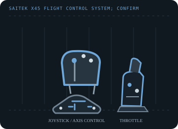

[ JOYSTICK CONTROLLERS // IDENTIFIED COMPONENT ]
Saitek X45 Flight Control System
Legacy USB flight-control pair combining a joystick and a separate throttle with programmable hats and buttons.

MODEL IDENTIFICATION: Saitek X45 Flight Control System; confirm the X45 label and connector condition because Saitek revised regional bundles. Published family information does not establish the revision or condition of an individual unit; compare its label and included parts with the linked documentation.
Model specifications
| Catalog subcategory | Joystick controllers |
|---|---|
| Exact model / identifier | Saitek X45 Flight Control System; confirm the X45 label and connector condition because Saitek revised regional bundles. |
| Axes and buttons | Pitch/roll stick axes, rudder input and throttle axis, with trigger, POV hat, mode control and multiple base/throttle buttons and rotary controls. Use the manual's labeled layout rather than assuming every revision maps identically. |
| Physical interface | Wired USB connection to a Windows PC; game-controller input with legacy Saitek profile programming layered on top. |
| Sensors and protocol | Analog stick/throttle position axes with digital buttons and hat directions; sensor construction and resolution are not specified in the cited Logitech support overview. |
| Power | USB bus power; no separate mains adapter is identified in the X45 manual. Inspect the unit label and cable before connecting an unknown revision. |
| Host OS and driver compatibility | Originally supported Windows 98/Me/2000/XP-era PCs. Basic USB HID recognition on later Windows versions does not restore the discontinued Saitek SST programming utility or old game profiles. |
Setup and calibration
Install the applicable legacy Saitek driver/software only on a compatible, isolated host; otherwise try standard game-controller enumeration. Center the stick, exercise all axes, and calibrate in the OS before profile setup.
Keep the operating-system baseline calibration and in-game sensitivity/dead-zone settings separate. Record the OS, driver, firmware and game used to test each axis and button.
Preservation and service notes
Inspect the twist centering, throttle friction, hat switch and the USB cable. Preserve the original driver/profile installer and note whether the host sees one device or more than one interface.
For an archive specimen, photograph the model label, note all included cables/adapters and distinguish directly observed behavior from published specifications.
References and support
- Saitek X45 digital joystick and throttle manual — ManualsLibScanned X45 user manual; verify the exact connector and control arrangement against the physical revision.
- Saitek driver and software downloads — Logitech SupportManufacturer guidance for locating legacy Saitek drivers and programming utilities.
Vendor support pages and manual downloads can change. Preserve the applicable manual and installer with a legacy host image, and verify the printed revision before service.